CODING AGENTS AS PIXEL WORLD MODELS
traex/DeepSeek-V4.1-Flash · phygen_014
点击播放 · 原生 RGB 像素
逐轮保存的候选
回放视频、检查图与代码变化。
每份候选均可单独播放。实际图片检查记录在下方工具轨迹中。
候选 01播放与检查图
点击播放 · 原生 RGB 像素
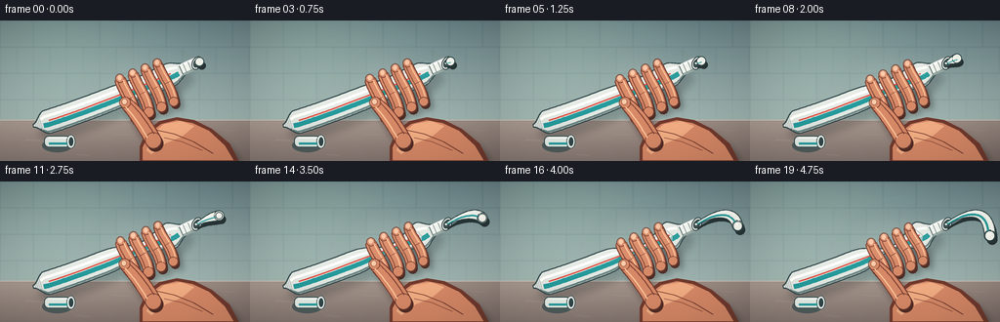
展开代码变化
--- 上一保存版本
+++ 本次保存版本
@@ -0,0 +1,684 @@
+from pathlib import Path
+
+import numpy as np
+from PIL import Image, ImageDraw, ImageFilter
+
+from artifact_io import save
+
+
+W, H = 256, 144
+N, FPS = 20, 4.0
+SS = 4
+SW, SH = W * SS, H * SS
+
+
+def clamp(value, low=0.0, high=1.0):
+ return max(low, min(high, value))
+
+
+def smoothstep(edge0, edge1, value):
+ if edge0 == edge1:
+ return float(value >= edge1)
+ t = clamp((value - edge0) / (edge1 - edge0))
+ return t * t * (3.0 - 2.0 * t)
+
+
+def mix(a, b, t):
+ return tuple(round(a[i] + (b[i] - a[i]) * t) for i in range(3))
+
+
+def rgba(color, alpha=255):
+ if len(color) == 4:
+ return color
+ return (*color, alpha)
+
+
+def pt(point):
+ return (point[0] * SS, point[1] * SS)
+
+
+def sc(value):
+ return value * SS
+
+
+def lw(value):
+ return max(1, round(sc(value)))
+
+
+def bezier_point(p0, p1, p2, p3, t):
+ u = 1.0 - t
+ return (
+ u * u * u * p0[0] + 3 * u * u * t * p1[0] + 3 * u * t * t * p2[0] + t * t * t * p3[0],
+ u * u * u * p0[1] + 3 * u * u * t * p1[1] + 3 * u * t * t * p2[1] + t * t * t * p3[1],
+ )
+
+
+def bezier_tangent(p0, p1, p2, p3, t):
+ u = 1.0 - t
+ dx = 3 * u * u * (p1[0] - p0[0]) + 6 * u * t * (p2[0] - p1[0]) + 3 * t * t * (p3[0] - p2[0])
+ dy = 3 * u * u * (p1[1] - p0[1]) + 6 * u * t * (p2[1] - p1[1]) + 3 * t * t * (p3[1] - p2[1])
+ length = max(1e-6, (dx * dx + dy * dy) ** 0.5)
+ return dx / length, dy / length
+
+
+def sample_bezier(p0, p1, p2, p3, count=80):
+ return [bezier_point(p0, p1, p2, p3, i / (count - 1)) for i in range(count)]
+
+
+def offset_polygon(points, dx, dy):
+ return [(x + dx, y + dy) for x, y in points]
+
+
+def scaled_points(points):
+ return [pt(point) for point in points]
+
+
+def tapered_polygon(points, widths):
+ left, right = [], []
+ for i, (x, y) in enumerate(points):
+ if i == 0:
+ tx, ty = points[1][0] - x, points[1][1] - y
+ elif i == len(points) - 1:
+ tx, ty = x - points[i - 1][0], y - points[i - 1][1]
+ else:
+ tx, ty = points[i + 1][0] - points[i - 1][0], points[i + 1][1] - points[i - 1][1]
+ length = max(1e-6, (tx * tx + ty * ty) ** 0.5)
+ nx, ny = -ty / length, tx / length
+ half = widths[i] * 0.5
+ left.append((x + nx * half, y + ny * half))
+ right.append((x - nx * half, y - ny * half))
+ return left + list(reversed(right))
+
+
+def draw_tapered_capsule(draw, points, widths, fill, outline, outline_extra=1.0):
+ if outline is not None:
+ outer_widths = [w + outline_extra * 2 for w in widths]
+ outer = scaled_points(tapered_polygon(points, outer_widths))
+ draw.polygon(outer, fill=rgba(outline))
+ inner = scaled_points(tapered_polygon(points, widths))
+ draw.polygon(inner, fill=rgba(fill))
+ for point, width in ((points[0], widths[0]), (points[-1], widths[-1])):
+ x, y = pt(point)
+ radius = sc(width * 0.5)
+ draw.ellipse((x - radius, y - radius, x + radius, y + radius), fill=rgba(fill))
+ if outline is not None:
+ draw.ellipse(
+ (x - radius - sc(outline_extra), y - radius - sc(outline_extra),
+ x + radius + sc(outline_extra), y + radius + sc(outline_extra)),
+ outline=rgba(outline),
+ width=lw(0.7),
+ )
+
+
+def line_path(draw, points, fill, width):
+ draw.line(scaled_points(points), fill=rgba(fill), width=lw(width), joint="curve")
+
+
+def gradient_image(size, top_color, bottom_color, left_color=None, right_color=None):
+ width, height = size
+ y = np.linspace(0.0, 1.0, height, dtype=np.float32)[:, None, None]
+ base = np.array(top_color, dtype=np.float32)[None, None, :] * (1.0 - y)
+ base += np.array(bottom_color, dtype=np.float32)[None, None, :] * y
+ if left_color is not None and right_color is not None:
+ x = np.linspace(0.0, 1.0, width, dtype=np.float32)[None, :, None]
+ side = np.array(left_color, dtype=np.float32)[None, None, :] * (1.0 - x)
+ side += np.array(right_color, dtype=np.float32)[None, None, :] * x
+ base = base * 0.55 + side * 0.45
+ return Image.fromarray(np.clip(base, 0, 255).astype(np.uint8), "RGB")
+
+
+def fill_mask_polygon(layer, mask, points, gradient):
+ ImageDraw.Draw(mask).polygon(scaled_points(points), fill=255)
+ layer.paste(gradient, (0, 0), mask)
+
+
+def draw_shadow(layer, polygons, blur=3.0, opacity=90, offset=(4, 7)):
+ shadow = Image.new("RGBA", (SW, SH), (0, 0, 0, 0))
+ draw = ImageDraw.Draw(shadow)
+ for points in polygons:
+ draw.polygon(scaled_points(offset_polygon(points, *offset)), fill=(21, 27, 27, opacity))
+ shadow = shadow.filter(ImageFilter.GaussianBlur(sc(blur)))
+ layer.alpha_composite(shadow)
+
+
+def make_background():
+ y = np.linspace(0.0, 1.0, SH, dtype=np.float32)[:, None, None]
+ wall_top = np.array((99, 126, 130), dtype=np.float32)
+ wall_bottom = np.array((174, 193, 185), dtype=np.float32)
+ wall = wall_top * (1 - y) + wall_bottom * y
+ wall = np.repeat(wall, SW, axis=1)
+
+ # Soft window light from upper left gives the white tube dimension.
+ yy, xx = np.mgrid[0:SH, 0:SW].astype(np.float32)
+ nx = xx / SW
+ ny = yy / SH
+ light = np.exp(-(((nx - 0.18) / 0.42) ** 2 + ((ny - 0.06) / 0.58) ** 2))
+ wall += light[:, :, None] * np.array((20, 21, 14), dtype=np.float32)[None, None, :]
+ bg = Image.fromarray(np.clip(wall, 0, 255).astype(np.uint8), "RGB")
+ draw = ImageDraw.Draw(bg, "RGBA")
+
+ # Muted bathroom tiles, kept low contrast so the tube remains the subject.
+ tile_w, tile_h = 34, 27
+ for row in range(0, 5):
+ y0 = row * tile_h
+ offset = tile_w // 2 if row % 2 else 0
+ for col in range(-1, 9):
+ x0 = col * tile_w - offset
+ shade = ((row * 7 + col * 3) % 5 - 2) * 3
+ draw.rectangle(
+ (sc(x0 + 1), sc(y0 + 1), sc(x0 + tile_w - 1), sc(y0 + tile_h - 1)),
+ fill=(197 + shade, 210 + shade, 203 + shade, 17),
+ )
+ for x in range(-tile_w, W + tile_w, tile_w):
+ draw.line((sc(x), 0, sc(x), sc(102)), fill=(75, 103, 104, 38), width=lw(0.55))
+ for yline in range(0, 108, tile_h):
+ draw.line((0, sc(yline), SW, sc(yline)), fill=(75, 103, 104, 42), width=lw(0.55))
+
+ counter_top = 102
+ counter = gradient_image(
+ (SW, SH - sc(counter_top)),
+ (173, 158, 146),
+ (117, 103, 97),
+ (162, 150, 140),
+ (125, 111, 104),
+ )
+ bg.paste(counter, (0, sc(counter_top)))
+ draw.line(
+ (0, sc(counter_top), SW, sc(counter_top)),
+ fill=(232, 220, 205, 135),
+ width=lw(1.1),
+ )
+ draw.line(
+ (0, sc(counter_top + 1.2), SW, sc(counter_top + 1.2)),
+ fill=(80, 67, 63, 55),
+ width=lw(0.55),
+ )
+
+ # A few restrained marble flecks keep the counter from reading as flat color.
+ flecks = [
+ (26, 122, 22, 1.2), (78, 137, 13, 0.9), (115, 116, 18, 0.8),
+ (193, 132, 24, 0.9), (228, 112, 14, 0.7), (55, 113, 11, 0.7),
+ ]
+ for x, yf, length, width in flecks:
+ draw.line(
+ (sc(x), sc(yf), sc(x + length), sc(yf + 1.5)),
+ fill=(238, 226, 215, 28),
+ width=lw(width),
+ )
+ return bg.filter(ImageFilter.GaussianBlur(sc(0.35)))
+
+
+TUBE_P0 = (34.0, 108.0)
+TUBE_P1 = (80.0, 96.0)
+TUBE_P2 = (166.0, 60.0)
+TUBE_P3 = (205.0, 42.0)
+
+
+def tube_geometry(s):
+ center = bezier_point(TUBE_P0, TUBE_P1, TUBE_P2, TUBE_P3, s)
+ tangent = bezier_tangent(TUBE_P0, TUBE_P1, TUBE_P2, TUBE_P3, s)
+ normal = (-tangent[1], tangent[0])
+ return center, tangent, normal
+
+
+def tube_half_width(s, pressure):
+ width = 1.4 + 10.7 * smoothstep(0.0, 0.095, s)
+ width *= 1.0 - 0.54 * smoothstep(0.785, 0.89, s)
+ squeeze = 0.12 + 0.76 * pressure
+ width *= 1.0 - squeeze * np.exp(-((s - 0.615) / 0.105) ** 2)
+ width *= 1.0 + 0.29 * pressure * np.exp(-((s - 0.785) / 0.052) ** 2)
+ width *= 1.0 + 0.07 * pressure * np.exp(-((s - 0.47) / 0.07) ** 2)
+ return max(1.1, width)
+
+
+def tube_outline_points(pressure, start=0.0, end=0.895, samples=120):
+ top, bottom = [], []
+ for i in range(samples):
+ s = start + (end - start) * i / (samples - 1)
+ center, _, normal = tube_geometry(s)
+ half = tube_half_width(s, pressure)
+ top.append((center[0] - normal[0] * half, center[1] - normal[1] * half))
+ bottom.append((center[0] + normal[0] * half, center[1] + normal[1] * half))
+ return top + list(reversed(bottom)), top, bottom
+
+
+def curved_offset_path(pressure, offset, start=0.01, end=0.88, samples=100):
+ points = []
+ for i in range(samples):
+ s = start + (end - start) * i / (samples - 1)
+ center, _, normal = tube_geometry(s)
+ half = tube_half_width(s, pressure)
+ points.append((center[0] + normal[0] * half * offset, center[1] + normal[1] * half * offset))
+ return points
+
+
+def draw_tube(scene, pressure):
+ body_points, top_edge, bottom_edge = tube_outline_points(pressure)
+ body_mask = Image.new("L", (SW, SH), 0)
+ body_layer = Image.new("RGBA", (SW, SH), (0, 0, 0, 0))
+
+ tube_gradient = gradient_image(
+ (SW, SH),
+ (250, 250, 243),
+ (194, 205, 200),
+ (248, 250, 245),
+ (201, 212, 207),
+ )
+ ImageDraw.Draw(body_mask).polygon(scaled_points(body_points), fill=255)
+ body_layer.paste(tube_gradient, (0, 0), body_mask)
+
+ detail = Image.new("RGBA", (SW, SH), (0, 0, 0, 0))
+ d = ImageDraw.Draw(detail, "RGBA")
+
+ # Toothpaste package stripe, clipped to the deforming tube.
+ stripe_path = curved_offset_path(pressure, 0.25, 0.07, 0.835)
+ line_path(d, stripe_path, (37, 151, 151), 5.0)
+ accent_path = curved_offset_path(pressure, -0.08, 0.11, 0.79)
+ line_path(d, accent_path, (219, 78, 65), 1.6)
+
+ # Long highlight and soft underside shadow.
+ highlight_path = curved_offset_path(pressure, -0.48, 0.06, 0.84)
+ line_path(d, highlight_path, (255, 255, 250), 2.8)
+ lower_shadow = curved_offset_path(pressure, 0.83, 0.04, 0.86)
+ line_path(d, lower_shadow, (104, 129, 127), 2.0)
+
+ # Compressive wrinkles spread out from the grip as pressure rises.
+ wrinkle_centers = [0.515, 0.565, 0.665, 0.715, 0.755]
+ for i, s0 in enumerate(wrinkle_centers):
+ strength = pressure * (0.62 + 0.38 * np.exp(-((s0 - 0.62) / 0.16) ** 2))
+ if strength < 0.08:
+ continue
+ s = s0 + 0.012 * np.sin(i * 2.1) * pressure
+ center, tangent, normal = tube_geometry(s)
+ half = tube_half_width(s, pressure)
+ bend = (3.0 + 3.0 * pressure) * (1 if i % 2 == 0 else -1)
+ start = (center[0] - normal[0] * half * 0.82, center[1] - normal[1] * half * 0.82)
+ end = (center[0] + normal[0] * half * 0.82, center[1] + normal[1] * half * 0.82)
+ mid = (
+ center[0] + tangent[0] * bend,
+ center[1] + tangent[1] * bend,
+ )
+ wrinkle = [start, mid, end]
+ alpha = int(95 * strength)
+ line_path(d, wrinkle, (80, 108, 108, alpha), 1.1)
+ shine = offset_polygon(wrinkle, -tangent[0] * 1.3, -tangent[1] * 1.3)
+ line_path(d, shine, (255, 255, 250, int(110 * strength)), 0.8)
+
+ # Ridged crimp at the sealed end.
+ for i in range(4):
+ s = 0.018 + i * 0.012
+ center, tangent, normal = tube_geometry(s)
+ half = tube_half_width(s, pressure) + 0.2
+ a = (center[0] - normal[0] * half, center[1] - normal[1] * half)
+ b = (center[0] + normal[0] * half, center[1] + normal[1] * half)
+ line_path(d, [a, b], (106, 126, 124, 95), 0.8)
+
+ body_layer.alpha_composite(detail)
+ # Clip all decorative marks back inside the tube silhouette.
+ clipped_detail = Image.new("RGBA", (SW, SH), (0, 0, 0, 0))
+ clipped_detail.paste(body_layer, (0, 0), body_mask)
+ scene.alpha_composite(clipped_detail)
+
+ outline = ImageDraw.Draw(scene, "RGBA")
+ outline.line(scaled_points(top_edge), fill=(49, 72, 72, 240), width=lw(1.15), joint="curve")
+ outline.line(scaled_points(bottom_edge), fill=(48, 70, 70, 235), width=lw(1.15), joint="curve")
+ outline.line(
+ [pt(top_edge[0]), pt(bottom_edge[0])],
+ fill=(48, 70, 70, 240),
+ width=lw(1.1),
+ )
+
+
+def draw_neck_and_opening(scene, pressure):
+ body_end = 0.86
+ neck_start = 0.855
+ neck_end = 0.972
+ center0, tangent0, normal0 = tube_geometry(neck_start)
+ center1, tangent1, normal1 = tube_geometry(neck_end)
+
+ # Neck is a short, glossy cylinder continuing from the tapered shoulder.
+ h0, h1 = 5.0, 4.8
+ neck_poly = [
+ (center0[0] - normal0[0] * h0, center0[1] - normal0[1] * h0),
+ (center1[0] - normal1[0] * h1, center1[1] - normal1[1] * h1),
+ (center1[0] + normal1[0] * h1, center1[1] + normal1[1] * h1),
+ (center0[0] + normal0[0] * h0, center0[1] + normal0[1] * h0),
+ ]
+ d = ImageDraw.Draw(scene, "RGBA")
+ d.polygon(scaled_points(neck_poly), fill=(239, 243, 237, 255))
+ line_path(d, [neck_poly[0], neck_poly[1]], (255, 255, 251), 2.2)
+ line_path(d, [neck_poly[3], neck_poly[2]], (149, 167, 161), 2.4)
+ line_path(d, [neck_poly[0], neck_poly[3]], (56, 77, 76), 1.1)
+ line_path(d, [neck_poly[1], neck_poly[2]], (48, 70, 69), 1.2)
+
+ # Thread ridges and a bright rim make the open mouth unmistakable.
+ for s in (0.882, 0.917):
+ c, _, n = tube_geometry(s)
+ h = 5.0
+ a = (c[0] - n[0] * h, c[1] - n[1] * h)
+ b = (c[0] + n[0] * h, c[1] + n[1] * h)
+ line_path(d, [a, b], (112, 132, 127, 150), 0.85)
+
+ angle = np.degrees(np.arctan2(tangent1[1], tangent1[0]))
+ rim = Image.new("RGBA", (SW, SH), (0, 0, 0, 0))
+ rd = ImageDraw.Draw(rim)
+ cx, cy = pt(center1)
+ rx, ry = sc(4.9), sc(7.2)
+ rd.ellipse((cx - rx, cy - ry, cx + rx, cy + ry), fill=(247, 247, 239, 255), outline=(47, 68, 68, 255), width=lw(1.0))
+ rd.ellipse((cx - rx * 0.67, cy - ry * 0.69, cx + rx * 0.67, cy + ry * 0.69), fill=(60, 78, 77, 255))
+ rd.arc(
+ (cx - rx * 0.78, cy - ry * 0.82, cx + rx * 0.78, cy + ry * 0.82),
+ 198, 336, fill=(244, 247, 240, 220), width=lw(1.0),
+ )
+ rim = rim.rotate(angle, resample=Image.Resampling.BICUBIC, center=(cx, cy))
+ scene.alpha_composite(rim)
+
+ # Shadow at the neck/shoulder join adds volume.
+ c, _, n = tube_geometry(0.855)
+ a = (c[0] - n[0] * 5.0, c[1] - n[1] * 5.0)
+ b = (c[0] + n[0] * 5.0, c[1] + n[1] * 5.0)
+ line_path(d, [a, b], (87, 111, 108, 120), 1.0)
+ return center1, tangent1
+
+
+def paste_path(opening, tangent, progress):
+ # The curl grows nonlinearly, matching the accelerating squeeze.
+ p0 = (opening[0] - tangent[0] * 1.0, opening[1] - tangent[1] * 1.0)
+ p1 = (opening[0] + tangent[0] * (13 + 7 * progress), opening[1] + tangent[1] * (13 + 7 * progress) - 4 * progress)
+ p2 = (opening[0] + 34 + 9 * progress, opening[1] - 15 - 5 * progress)
+ p3 = (opening[0] + 36 + 8 * progress, opening[1] + 1 + 11 * progress)
+ points = []
+ total = 46
+ for i in range(total):
+ t = i / (total - 1)
+ point = bezier_point(p0, p1, p2, p3, t)
+ points.append(point)
+ return points
+
+
+def draw_paste(scene, opening, tangent, pressure):
+ # A tiny bead appears immediately, then extrusion accelerates sharply.
+ progress = clamp((pressure - 0.02) / 0.98) ** 1.45
+ length = 0.10 + 0.90 * progress
+ full_path = paste_path(opening, tangent, progress)
+ count = max(4, int(round((len(full_path) - 1) * length)) + 1)
+ path = full_path[:count]
+
+ widths = []
+ for i in range(count):
+ t = i / max(1, count - 1)
+ widths.append(2.0 + (5.8 + 2.4 * progress) * smoothstep(0.0, 0.92, t))
+
+ d = ImageDraw.Draw(scene, "RGBA")
+ # Contact shadow on the tube neck and a soft cast shadow.
+ shadow_path = offset_polygon(path, 2.4, 4.0)
+ draw_tapered_capsule(d, shadow_path, [w * 1.05 for w in widths], (39, 52, 52, 78), None)
+ draw_tapered_capsule(d, path, widths, (239, 244, 235, 255), (44, 66, 66, 245), 0.9)
+
+ # A cool paste stripe and warm edge accent keep the extrusion readable.
+ if count > 5:
+ stripe = []
+ for i, point in enumerate(path):
+ if i == 0:
+ tx, ty = path[1][0] - point[0], path[1][1] - point[1]
+ elif i == len(path) - 1:
+ tx, ty = point[0] - path[i - 1][0], point[1] - path[i - 1][1]
+ else:
+ tx, ty = path[i + 1][0] - path[i - 1][0], path[i + 1][1] - path[i - 1][1]
+ length_n = max(1e-6, (tx * tx + ty * ty) ** 0.5)
+ nx, ny = -ty / length_n, tx / length_n
+ stripe.append((point[0] + nx * widths[i] * 0.13, point[1] + ny * widths[i] * 0.13))
+ line_path(d, stripe[1:], (42, 155, 154, 210), max(1, 1.35 * (0.6 + progress)))
+ highlight = []
+ for i, point in enumerate(path):
+ if i == 0:
+ tx, ty = path[1][0] - point[0], path[1][1] - point[1]
+ else:
+ tx, ty = point[0] - path[i - 1][0], point[1] - path[i - 1][1]
+ length_n = max(1e-6, (tx * tx + ty * ty) ** 0.5)
+ nx, ny = -ty / length_n, tx / length_n
+ highlight.append((point[0] - nx * widths[i] * 0.26, point[1] - ny * widths[i] * 0.26))
+ line_path(d, highlight[2:], (255, 255, 250, 205), 0.9)
+
+ # Glossy end bead makes the last frames feel under pressure.
+ if progress > 0.28:
+ end = path[-1]
+ radius = 2.5 + 2.8 * progress
+ d.ellipse(
+ (sc(end[0] - radius), sc(end[1] - radius), sc(end[0] + radius), sc(end[1] + radius)),
+ fill=(245, 247, 239, 255),
+ outline=(44, 66, 66, 230),
+ width=lw(0.8),
+ )
+ d.ellipse(
+ (sc(end[0] - radius * 0.45), sc(end[1] - radius * 0.55),
+ sc(end[0] + radius * 0.10), sc(end[1] - radius * 0.12)),
+ fill=(255, 255, 252, 180),
+ )
+
+
+def finger_paths(pressure):
+ fingers = []
+ for i, s in enumerate((0.535, 0.605, 0.675, 0.745)):
+ center, tangent, normal = tube_geometry(s)
+ base_offset = 27.0 - 2.2 * pressure
+ tip_offset = 16.5 - 3.5 * pressure
+ base = (center[0] + normal[0] * base_offset, center[1] + normal[1] * base_offset)
+ tip = (center[0] - normal[0] * tip_offset, center[1] - normal[1] * tip_offset)
+ c1 = (
+ base[0] * 0.65 + tip[0] * 0.35 + tangent[0] * (4.0 + pressure * 2.0),
+ base[1] * 0.65 + tip[1] * 0.35 + tangent[1] * (4.0 + pressure * 2.0),
+ )
+ c2 = (
+ base[0] * 0.28 + tip[0] * 0.72 - tangent[0] * (1.5 + pressure * 1.5),
+ base[1] * 0.28 + tip[1] * 0.72 - tangent[1] * (1.5 + pressure * 1.5),
+ )
+ path = sample_bezier(base, c1, c2, tip, 30)
+ widths = [9.8 - 0.55 * i + 0.7 * np.sin(np.pi * j / 29) for j in range(30)]
+ widths[-1] = 7.1
+ fingers.append((path, widths, tangent, normal))
+ return fingers
+
+
+def palm_points():
+ return [
+ (143, 145), (143, 129), (150, 113), (163, 103), (181, 99),
+ (199, 102), (217, 111), (235, 126), (245, 145),
+ ]
+
+
+def thumb_points(pressure):
+ base = (157.0, 123.0)
+ tip = (128.0 - 1.0 * pressure, 84.0 + 1.0 * pressure)
+ c1 = (149.0, 108.0)
+ c2 = (137.0 - pressure, 91.0 + pressure)
+ path = sample_bezier(base, c1, c2, tip, 30)
+ widths = [15.0 - 4.2 * (i / 29) + 1.1 * np.sin(np.pi * i / 29) for i in range(30)]
+ widths[-1] = 9.8
+ return path, widths
+
+
+def draw_hand_shadow(layer, pressure):
+ palm = palm_points()
+ fingers = finger_paths(pressure)
+ thumb_path, thumb_widths = thumb_points(pressure)
+ polygons = [palm]
+ for path, widths, _, _ in fingers:
+ polygons.append(tapered_polygon(path, [w + 2 for w in widths]))
+ polygons.append(tapered_polygon(thumb_path, [w + 2 for w in thumb_widths]))
+ draw_shadow(layer, polygons, blur=3.2, opacity=90, offset=(5, 8))
+
+
+def draw_hand(scene, pressure):
+ palm = palm_points()
+ d = ImageDraw.Draw(scene, "RGBA")
+ skin_dark = (111, 57, 43)
+ skin = (209, 134, 99)
+ skin_light = (239, 178, 137)
+
+ # Palm behind the tube; fingers and thumb are added afterward to wrap it.
+ d.polygon(scaled_points(palm), fill=rgba(skin_dark))
+ inset = [
+ (146, 143), (146, 130), (153, 115), (165, 106), (181, 102),
+ (197, 105), (214, 113), (230, 128), (239, 143),
+ ]
+ d.polygon(scaled_points(inset), fill=rgba(skin))
+ palm_glow = [
+ (150, 133), (156, 116), (168, 106), (185, 103), (199, 108),
+ (186, 119), (169, 126), (155, 137),
+ ]
+ d.polygon(scaled_points(palm_glow), fill=(237, 170, 128, 85))
+ line_path(d, [(160, 112), (178, 116), (198, 124), (218, 136)], (122, 64, 47, 100), 1.1)
+ line_path(d, [(168, 120), (186, 124), (207, 133)], (117, 61, 46, 72), 0.8)
+
+ fingers = finger_paths(pressure)
+ for index, (path, widths, tangent, normal) in enumerate(fingers):
+ # Dark contact shadow under each wrapped finger.
+ contact = offset_polygon(path, 1.8, 2.5)
+ draw_tapered_capsule(d, contact, [w + 1.5 for w in widths], (75, 43, 34, 82), None)
+ draw_tapered_capsule(d, path, widths, skin, skin_dark, 1.0)
+
+ left = []
+ right = []
+ for j, point in enumerate(path):
+ if j == 0:
+ tx, ty = path[1][0] - point[0], path[1][1] - point[1]
+ elif j == len(path) - 1:
+ tx, ty = point[0] - path[j - 1][0], point[1] - path[j - 1][1]
+ else:
+ tx, ty = path[j + 1][0] - path[j - 1][0], path[j + 1][1] - path[j - 1][1]
+ ln = max(1e-6, (tx * tx + ty * ty) ** 0.5)
+ nx, ny = -ty / ln, tx / ln
+ left.append((point[0] + nx * widths[j] * 0.29, point[1] + ny * widths[j] * 0.29))
+ right.append((point[0] - nx * widths[j] * 0.27, point[1] - ny * widths[j] * 0.27))
+ line_path(d, left[3:-2], (244, 185, 143, 150), 1.25)
+ line_path(d, right[3:-2], (126, 65, 48, 100), 1.0)
+
+ # Knuckle creases tighten slightly with pressure.
+ crease_t = 0.48
+ k = int(crease_t * (len(path) - 1))
+ center = path[k]
+ tx, ty = path[k + 1][0] - path[k - 1][0], path[k + 1][1] - path[k - 1][1]
+ ln = max(1e-6, (tx * tx + ty * ty) ** 0.5)
+ nx, ny = -ty / ln, tx / ln
+ half = widths[k] * 0.34
+ a = (center[0] - nx * half, center[1] - ny * half)
+ b = (center[0] + nx * half, center[1] + ny * half)
+ line_path(d, [a, b], (132, 69, 52, 145), 0.8)
+
+ # A small nail catches the same window light as the tube.
+ tip = path[-1]
+ nail_center = (tip[0] - normal[0] * 0.5, tip[1] - normal[1] * 0.5)
+ d.ellipse(
+ (sc(nail_center[0] - 2.2), sc(nail_center[1] - 2.6),
+ sc(nail_center[0] + 2.2), sc(nail_center[1] + 2.6)),
+ fill=(242, 193, 161, 145),
+ )
+
+ thumb_path, thumb_widths = thumb_points(pressure)
+ draw_tapered_capsule(d, offset_polygon(thumb_path, 2.0, 3.0), [w + 1.5 for w in thumb_widths], (79, 43, 35, 70), None)
+ draw_tapered_capsule(d, thumb_path, thumb_widths, skin, skin_dark, 1.0)
+ thumb_highlight = []
+ thumb_shadow = []
+ for j, point in enumerate(thumb_path):
+ if j == 0:
+ tx, ty = thumb_path[1][0] - point[0], thumb_path[1][1] - point[1]
+ else:
+ tx, ty = point[0] - thumb_path[j - 1][0], point[1] - thumb_path[j - 1][1]
+ ln = max(1e-6, (tx * tx + ty * ty) ** 0.5)
+ nx, ny = -ty / ln, tx / ln
+ thumb_highlight.append((point[0] - nx * thumb_widths[j] * 0.27, point[1] - ny * thumb_widths[j] * 0.27))
+ thumb_shadow.append((point[0] + nx * thumb_widths[j] * 0.27, point[1] + ny * thumb_widths[j] * 0.27))
+ line_path(d, thumb_highlight[3:-3], (246, 189, 145, 160), 1.45)
+ line_path(d, thumb_shadow[3:-3], (123, 63, 47, 120), 1.1)
+
+ tip = thumb_path[-1]
+ d.ellipse(
+ (sc(tip[0] - 3.4), sc(tip[1] - 4.0), sc(tip[0] + 2.3), sc(tip[1] + 2.3)),
+ fill=(244, 198, 164, 165),
+ outline=(139, 78, 59, 100),
+ width=lw(0.6),
+ )
+
+
+def add_cap(scene):
+ # A loose cap on the counter reinforces that the tube is open.
+ d = ImageDraw.Draw(scene, "RGBA")
+ d.ellipse((sc(43), sc(121), sc(74), sc(135)), fill=(78, 91, 89, 55))
+ d.rounded_rectangle(
+ (sc(45), sc(118), sc(72), sc(130)),
+ radius=sc(5.0),
+ fill=(226, 235, 229, 255),
+ outline=(57, 80, 79, 220),
+ width=lw(0.9),
+ )
+ d.ellipse(
+ (sc(68), sc(117), sc(77), sc(131)),
+ fill=(238, 244, 238, 255),
+ outline=(57, 80, 79, 220),
+ width=lw(0.8),
+ )
+ d.ellipse(
+ (sc(70.5), sc(119.5), sc(75), sc(128.5)),
+ fill=(48, 70, 70, 220),
+ )
+ line_path(d, [(49, 120), (69, 120)], (255, 255, 250, 180), 1.0)
+ line_path(d, [(50, 126), (69, 126)], (39, 153, 153, 210), 2.2)
+
+
+def add_lighting_and_finish(scene, pressure):
+ # A soft highlight on the grip, plus a gentle vignette, directs attention.
+ glow = Image.new("RGBA", (SW, SH), (0, 0, 0, 0))
+ gd = ImageDraw.Draw(glow)
+ gx, gy = sc(153), sc(61)
+ for radius, alpha in ((54, 10), (37, 12), (22, 14)):
+ gd.ellipse(
+ (gx - sc(radius), gy - sc(radius * 0.55),
+ gx + sc(radius), gy + sc(radius * 0.55)),
+ fill=(255, 248, 224, int(alpha * (0.6 + 0.4 * pressure))),
+ )
+ glow = glow.filter(ImageFilter.GaussianBlur(sc(12)))
+ scene.alpha_composite(glow)
+
+ arr = np.asarray(scene.convert("RGB"), dtype=np.float32)
+ yy, xx = np.mgrid[0:SH, 0:SW].astype(np.float32)
+ nx = (xx / SW - 0.5) * 2
+ ny = (yy / SH - 0.5) * 2
+ vignette = np.clip(1.04 - 0.12 * (nx * nx * 0.72 + ny * ny * 0.8), 0.84, 1.04)
+ arr *= vignette[:, :, None]
+ # Very light cool lift in shadows, warm lift in highlights.
+ arr[..., 2] += (1.0 - np.clip(arr[..., 2] / 255.0, 0, 1)) * 2.2
+ arr[..., 0] += np.clip(arr[..., 0] / 255.0, 0, 1) * 1.5
+ return Image.fromarray(np.clip(arr, 0, 255).astype(np.uint8), "RGB")
+
+
+def render_frame(index):
+ t = index / (N - 1)
+ # A late, steep pressure ramp reads as an accelerating squeeze.
+ pressure = smoothstep(0.02, 1.0, t) ** 1.18
+
+ scene = make_background().convert("RGBA")
+
+ body_points, _, _ = tube_outline_points(pressure)
+ draw_hand_shadow(scene, pressure)
+ draw_shadow(scene, [body_points], blur=3.8, opacity=58, offset=(5, 9))
+
+ draw_tube(scene, pressure)
+ opening, tangent = draw_neck_and_opening(scene, pressure)
+ draw_hand(scene, pressure)
+ draw_paste(scene, opening, tangent, pressure)
+ add_cap(scene)
+
+ finished = add_lighting_and_finish(scene, pressure)
+ return np.asarray(finished.resize((W, H), Image.Resampling.LANCZOS), dtype=np.uint8)
+
+
+def main():
+ case_dir = Path(__file__).resolve().parent
+ frames = np.stack([render_frame(i) for i in range(N)])
+ save(frames, case_dir)
+ print(f"Wrote {N} frames to {case_dir}")
+
+
+if __name__ == "__main__":
+ main()
候选 02播放与检查图
点击播放 · 原生 RGB 像素
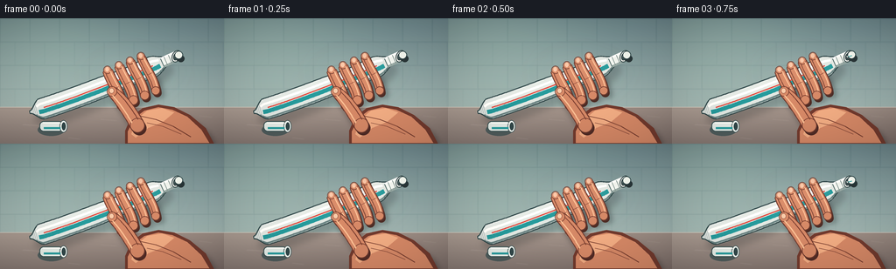
展开代码变化
--- 上一保存版本
+++ 本次保存版本
@@ -211,7 +211,7 @@
TUBE_P0 = (34.0, 108.0)
TUBE_P1 = (80.0, 96.0)
TUBE_P2 = (166.0, 60.0)
-TUBE_P3 = (205.0, 42.0)
+TUBE_P3 = (202.0, 38.0)
def tube_geometry(s):
@@ -224,9 +224,9 @@
def tube_half_width(s, pressure):
width = 1.4 + 10.7 * smoothstep(0.0, 0.095, s)
width *= 1.0 - 0.54 * smoothstep(0.785, 0.89, s)
- squeeze = 0.12 + 0.76 * pressure
+ squeeze = 0.10 + 0.84 * pressure
width *= 1.0 - squeeze * np.exp(-((s - 0.615) / 0.105) ** 2)
- width *= 1.0 + 0.29 * pressure * np.exp(-((s - 0.785) / 0.052) ** 2)
+ width *= 1.0 + 0.42 * pressure * np.exp(-((s - 0.785) / 0.052) ** 2)
width *= 1.0 + 0.07 * pressure * np.exp(-((s - 0.47) / 0.07) ** 2)
return max(1.1, width)
@@ -359,7 +359,7 @@
b = (c[0] + n[0] * h, c[1] + n[1] * h)
line_path(d, [a, b], (112, 132, 127, 150), 0.85)
- angle = np.degrees(np.arctan2(tangent1[1], tangent1[0]))
+ angle = np.degrees(np.arctan2(tangent1[1], tangent1[0])) + 24
rim = Image.new("RGBA", (SW, SH), (0, 0, 0, 0))
rd = ImageDraw.Draw(rim)
cx, cy = pt(center1)
@@ -384,9 +384,9 @@
def paste_path(opening, tangent, progress):
# The curl grows nonlinearly, matching the accelerating squeeze.
p0 = (opening[0] - tangent[0] * 1.0, opening[1] - tangent[1] * 1.0)
- p1 = (opening[0] + tangent[0] * (13 + 7 * progress), opening[1] + tangent[1] * (13 + 7 * progress) - 4 * progress)
- p2 = (opening[0] + 34 + 9 * progress, opening[1] - 15 - 5 * progress)
- p3 = (opening[0] + 36 + 8 * progress, opening[1] + 1 + 11 * progress)
+ p1 = (opening[0] + 14 + 3 * progress, opening[1] - 13 - 3 * progress)
+ p2 = (opening[0] + 33 + 4 * progress, opening[1] - 27 - 4 * progress)
+ p3 = (opening[0] + 37 + 4 * progress, opening[1] - 9 - 10 * progress)
points = []
total = 46
for i in range(total):
@@ -407,7 +407,7 @@
widths = []
for i in range(count):
t = i / max(1, count - 1)
- widths.append(2.0 + (5.8 + 2.4 * progress) * smoothstep(0.0, 0.92, t))
+ widths.append(2.2 + (7.1 + 2.8 * progress) * smoothstep(0.0, 0.92, t))
d = ImageDraw.Draw(scene, "RGBA")
# Contact shadow on the tube neck and a soft cast shadow.
@@ -443,7 +443,7 @@
# Glossy end bead makes the last frames feel under pressure.
if progress > 0.28:
end = path[-1]
- radius = 2.5 + 2.8 * progress
+ radius = 2.8 + 3.4 * progress
d.ellipse(
(sc(end[0] - radius), sc(end[1] - radius), sc(end[0] + radius), sc(end[1] + radius)),
fill=(245, 247, 239, 255),
@@ -459,19 +459,19 @@
def finger_paths(pressure):
fingers = []
- for i, s in enumerate((0.535, 0.605, 0.675, 0.745)):
+ for i, s in enumerate((0.545, 0.61, 0.675, 0.74)):
center, tangent, normal = tube_geometry(s)
- base_offset = 27.0 - 2.2 * pressure
- tip_offset = 16.5 - 3.5 * pressure
+ base_offset = 25.0 - 1.5 * pressure
+ tip_offset = 12.0 - 3.8 * pressure
base = (center[0] + normal[0] * base_offset, center[1] + normal[1] * base_offset)
tip = (center[0] - normal[0] * tip_offset, center[1] - normal[1] * tip_offset)
c1 = (
- base[0] * 0.65 + tip[0] * 0.35 + tangent[0] * (4.0 + pressure * 2.0),
- base[1] * 0.65 + tip[1] * 0.35 + tangent[1] * (4.0 + pressure * 2.0),
+ base[0] * 0.65 + tip[0] * 0.35 + tangent[0] * (5.0 + pressure * 2.0),
+ base[1] * 0.65 + tip[1] * 0.35 + tangent[1] * (5.0 + pressure * 2.0),
)
c2 = (
- base[0] * 0.28 + tip[0] * 0.72 - tangent[0] * (1.5 + pressure * 1.5),
- base[1] * 0.28 + tip[1] * 0.72 - tangent[1] * (1.5 + pressure * 1.5),
+ base[0] * 0.28 + tip[0] * 0.72 - tangent[0] * (0.5 + pressure * 1.5),
+ base[1] * 0.28 + tip[1] * 0.72 - tangent[1] * (0.5 + pressure * 1.5),
)
path = sample_bezier(base, c1, c2, tip, 30)
widths = [9.8 - 0.55 * i + 0.7 * np.sin(np.pi * j / 29) for j in range(30)]
@@ -489,9 +489,9 @@
def thumb_points(pressure):
base = (157.0, 123.0)
- tip = (128.0 - 1.0 * pressure, 84.0 + 1.0 * pressure)
- c1 = (149.0, 108.0)
- c2 = (137.0 - pressure, 91.0 + pressure)
+ tip = (129.0 - 2.0 * pressure, 82.0 + 2.0 * pressure)
+ c1 = (147.0, 106.0)
+ c2 = (137.0 - pressure, 89.0 + pressure)
path = sample_bezier(base, c1, c2, tip, 30)
widths = [15.0 - 4.2 * (i / 29) + 1.1 * np.sin(np.pi * i / 29) for i in range(30)]
widths[-1] = 9.8
候选 03播放与检查图

候选 04播放与检查图
点击播放 · 原生 RGB 像素
展开代码变化
--- 上一保存版本
+++ 本次保存版本
@@ -384,9 +384,19 @@
def paste_path(opening, tangent, progress):
# The curl grows nonlinearly, matching the accelerating squeeze.
p0 = (opening[0] - tangent[0] * 1.0, opening[1] - tangent[1] * 1.0)
- p1 = (opening[0] + 14 + 3 * progress, opening[1] - 13 - 3 * progress)
- p2 = (opening[0] + 33 + 4 * progress, opening[1] - 27 - 4 * progress)
- p3 = (opening[0] + 37 + 4 * progress, opening[1] - 9 - 10 * progress)
+ normal = (-tangent[1], tangent[0])
+ p1 = (
+ opening[0] + tangent[0] * (8 + progress) - normal[0] * (6 + 2 * progress),
+ opening[1] + tangent[1] * (8 + progress) - normal[1] * (6 + 2 * progress),
+ )
+ p2 = (
+ opening[0] + tangent[0] * (35 + 3 * progress) - normal[0] * (23 + 3 * progress),
+ opening[1] + tangent[1] * (35 + 3 * progress) - normal[1] * (23 + 3 * progress),
+ )
+ p3 = (
+ opening[0] + tangent[0] * (51 + 3 * progress) - normal[0] * (5 + progress),
+ opening[1] + tangent[1] * (51 + 3 * progress) - normal[1] * (5 + progress),
+ )
points = []
total = 46
for i in range(total):
@@ -407,7 +417,9 @@
widths = []
for i in range(count):
t = i / max(1, count - 1)
- widths.append(2.2 + (7.1 + 2.8 * progress) * smoothstep(0.0, 0.92, t))
+ width = 1.9 + (8.3 + 2.3 * progress) * smoothstep(0.0, 0.62, t)
+ width *= 0.84 + 0.16 * smoothstep(0.68, 1.0, t)
+ widths.append(width)
d = ImageDraw.Draw(scene, "RGBA")
# Contact shadow on the tube neck and a soft cast shadow.
@@ -443,7 +455,7 @@
# Glossy end bead makes the last frames feel under pressure.
if progress > 0.28:
end = path[-1]
- radius = 2.8 + 3.4 * progress
+ radius = 2.7 + 3.2 * progress
d.ellipse(
(sc(end[0] - radius), sc(end[1] - radius), sc(end[0] + radius), sc(end[1] + radius)),
fill=(245, 247, 239, 255),
@@ -667,8 +679,6 @@
opening, tangent = draw_neck_and_opening(scene, pressure)
draw_hand(scene, pressure)
draw_paste(scene, opening, tangent, pressure)
- add_cap(scene)
-
finished = add_lighting_and_finish(scene, pressure)
return np.asarray(finished.resize((W, H), Image.Resampling.LANCZOS), dtype=np.uint8)
候选 05播放与检查图
可观测工具轨迹
实际执行的命令与返回图片。
命令 1exit 0
/bin/bash -c "pwd && rg --files -g 'prompt.txt' -g 'GENERATION_RULES.md' -g 'task_spec.json' -g '"'!*.mp4'"' -g '"'!*.webm'"'"
命令 2exit 0
/bin/bash -c "ls -la && find . -maxdepth 2 -type f -printf '%p\\n' | sort | head -200"
命令 3exit 0
/bin/bash -c 'cat prompt.txt'
命令 4exit 0
/bin/bash -c 'cat GENERATION_RULES.md'
命令 5exit 0
/bin/bash -c 'cat task_spec.json'
命令 6exit 0
/bin/bash -c "sed -n '1,240p' artifact_io.py && printf '\\n--- player ---\\n' && sed -n '1,260p' player_template.html"
命令 7exit 1
/bin/bash -c 'python generate.py'
命令 8exit 0
/bin/bash -c "rg -n \"width=max\\(1, sc\\(\" generate.py"
命令 9exit 1
/bin/bash -c 'python generate.py'
命令 10exit 1
/bin/bash -c 'python generate.py'
命令 11exit 0
/bin/bash -c 'python generate.py'
命令 12exit 0
/bin/bash -c "python - <<'PY'
from PIL import Image
for i in (0,5,10,15,19):
im=Image.open(f'frames/{i:02d}.png')
im.resize((768,432), Image.Resampling.NEAREST).save(f'.tmp/frame_{i:02d}_4x.png')
PY"命令 13exit 0
/bin/bash -c "python - <<'PY'
from PIL import Image
im=Image.open('frames/19.png')
im.crop((170,0,256,80)).resize((688,640),Image.Resampling.NEAREST).save('.tmp/end_crop.png')
im=Image.open('frames/00.png')
im.crop((170,0,256,80)).resize((688,640),Image.Resampling.NEAREST).save('.tmp/start_crop.png')
PY"命令 14exit 0
/bin/bash -c 'mkdir -p .tmp/candidate_v1 && cp generate.py pixels.npz index.html inspection.png transition_check.png .tmp/candidate_v1/ && cp -r frames .tmp/candidate_v1/frames'
命令 15exit 0
/bin/bash -c "python - <<'PY'
from PIL import Image
import numpy as np
for i in (0,4,8,12,16,19):
im=np.asarray(Image.open(f'frames/{i:02d}.png'))
print(i, im.mean(axis=(0,1)).round(1), im[45:80,190:256].mean(axis=(0,1)).round(1))
PY"命令 16exit 0
/bin/bash -c "python - <<'PY'
from PIL import Image
import numpy as np
for i in range(20):
im=np.asarray(Image.open(f'frames/{i:02d}.png')).astype(np.int16)
if i==0: base=im
print(f'{i:02d}', np.abs(im-base).mean().round(3), (np.abs(im-base)>10).any(axis=2).sum())
PY"命令 17exit 0
/bin/bash -c "python - <<'PY'
from PIL import Image
import numpy as np
for idx in (0,5,10,15,19):
im=Image.open(f'frames/{idx:02d}.png').crop((115,40,256,120)).resize((705,400),Image.Resampling.NEAREST)
im.save(f'.tmp/grip_{idx:02d}.png')
PY"命令 18exit 0
/bin/bash -c 'python generate.py'
命令 19exit 0
/bin/bash -c "python - <<'PY'
from PIL import Image
im=Image.open('frames/19.png')
im.resize((1024,576), Image.Resampling.NEAREST).save('.tmp/frame_19_v2_4x.png')
im.crop((155,0,256,82)).resize((808,656),Image.Resampling.NEAREST).save('.tmp/nozzle_19_v2.png')
PY"命令 20exit 0
/bin/bash -c "python - <<'PY'
from PIL import Image
im=Image.open('frames/19.png')
im.crop((185,0,256,60)).resize((710,600),Image.Resampling.NEAREST).save('.tmp/pathcrop.png')
PY"命令 21exit 0
/bin/bash -c "python - <<'PY'
from PIL import Image
for idx in (0,5,10,15,19):
im=Image.open(f'frames/{idx:02d}.png').crop((112,35,256,123)).resize((720,440),Image.Resampling.NEAREST)
im.save(f'.tmp/v2_grip_{idx:02d}.png')
PY"命令 22exit 0
/bin/bash -c "python - <<'PY'
import numpy as np
from generate import *
for p in (0,0.25,0.5,0.75,1):
c,_,_=tube_geometry(0.972)
t=bezier_tangent(TUBE_P0,TUBE_P1,TUBE_P2,TUBE_P3,.972)
path=paste_path(c,t,p)
print(p, tuple(round(v,1) for v in c), tuple(round(v,2) for v in t), tuple(round(v,1) for v in path[-1]))
PY"命令 23exit 0
/bin/bash -c "python - <<'PY'
from PIL import Image
for idx in (0,5,10,15,19):
Image.open(f'frames/{idx:02d}.png').crop((180,0,256,58)).resize((608,464),Image.Resampling.NEAREST).save(f'.tmp/paste_{idx:02d}.png')
PY"命令 24exit 0
/bin/bash -c 'python generate.py'
命令 25exit 0
/bin/bash -c "python - <<'PY'
from PIL import Image
im=Image.open('frames/19.png')
im.resize((1024,576), Image.Resampling.NEAREST).save('.tmp/frame_19_v3_4x.png')
im.crop((180,0,256,62)).resize((760,620),Image.Resampling.NEAREST).save('.tmp/paste_19_v3.png')
PY"命令 26exit 0
/bin/bash -c "rg -n \"add_cap\\(\" generate.py && ls -lh pixels.npz index.html inspection.png frames/00.png frames/19.png"
命令 27exit 0
/bin/bash -c 'command -v ffmpeg || true; command -v chromium || command -v google-chrome || true'
命令 28exit 0
/bin/bash -c "python - <<'PY'
from pathlib import Path
import json, numpy as np
from PIL import Image
spec=json.loads(Path('task_spec.json').read_text())
z=np.load('pixels.npz')['pixels']
print('tensor', z.shape, z.dtype, 'spec', (spec['frames'],spec['height'],spec['width']))
frames=sorted(Path('frames').glob('*.png'))
print('png_count', len(frames), 'sizes', sorted({Image.open(p).size for p in frames}))
changed=[int((z[:,:,i]"'!=z[:,:,i-1]).sum()) for i in range(1,z.shape[2])]
print('"'changed_pixels_per_step', changed)
print('unique_rgb', len(np.unique(z.reshape(3,-1).T, axis=0)))
PY"命令 29exit 0
/bin/bash -c "python - <<'PY'
from pathlib import Path
import json, re
text=Path('index.html').read_text()
m=re.search(r'const DATA=(\\{.*?\\}),W=', text)
data=json.loads(m.group(1))
print('html bytes', len(text.encode()), 'id', data['id'], 'frames', data['frames'], 'deltas', len(data['deltas']))
print('audio', data['audio'])
print('caption', data['caption'])
PY"命令 30exit 0
/bin/bash -c "python - <<'PY'
from PIL import Image
import numpy as np
from pathlib import Path
z=np.load('pixels.npz')['pixels']
for i in (0,9,19):
packed=z[:,:,i]
arr=np.stack([(packed>>16)&255,(packed>>8)&255,packed&255],axis=2).astype(np.uint8)
png=np.asarray(Image.open(f'frames/{i:02d}.png'))
print(i, np.array_equal(arr,png), np.abs(arr.astype(int)-png.astype(int)).max())
PY"命令 31exit 0
/bin/bash -c "git status --short 2>/dev/null || true; find . -maxdepth 1 -type f -printf '%f %s bytes\\n' | sort"
视觉工具实际返回图片 1

视觉工具实际返回图片 2
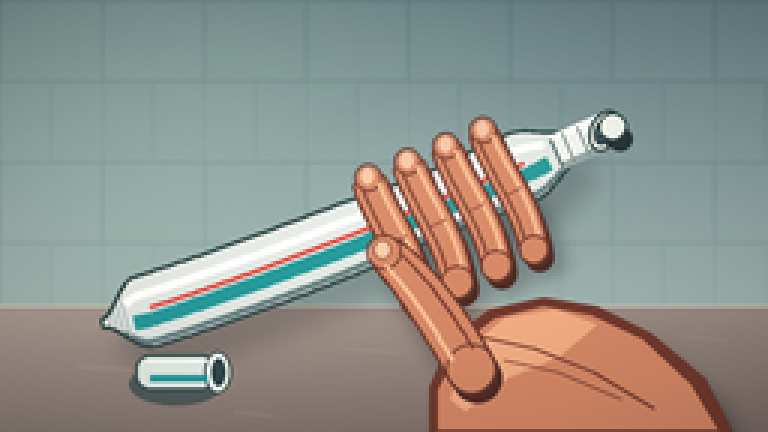
视觉工具实际返回图片 3
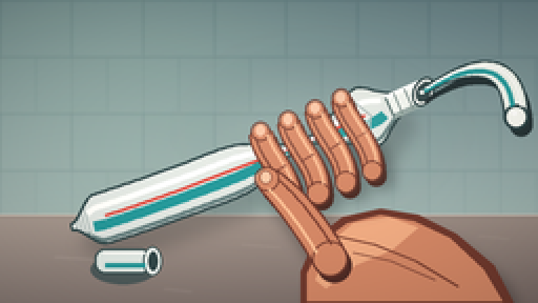
视觉工具实际返回图片 4
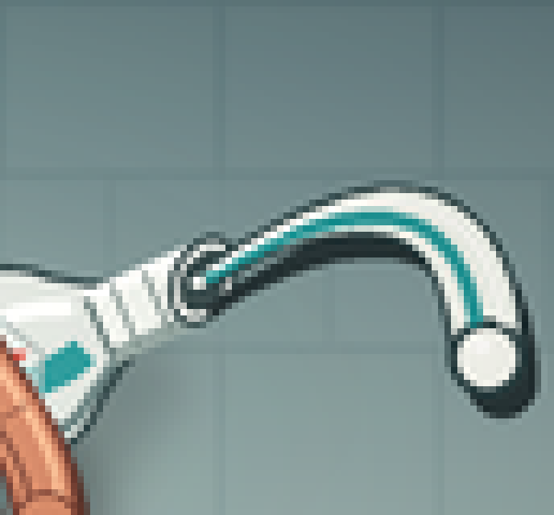
视觉工具实际返回图片 5
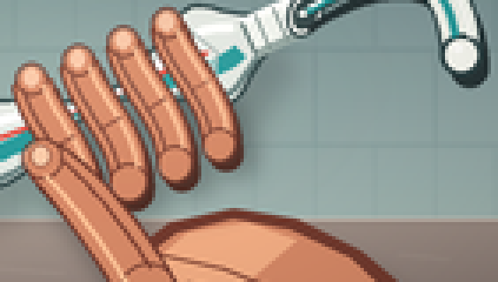
视觉工具实际返回图片 6
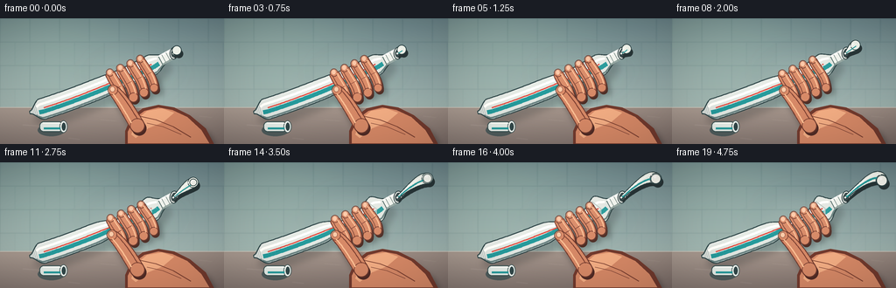
视觉工具实际返回图片 7
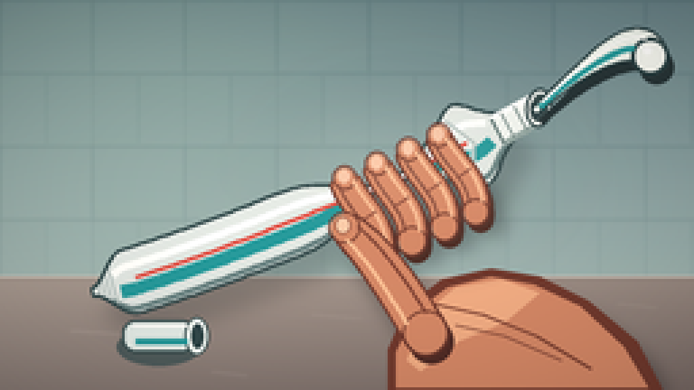
视觉工具实际返回图片 8
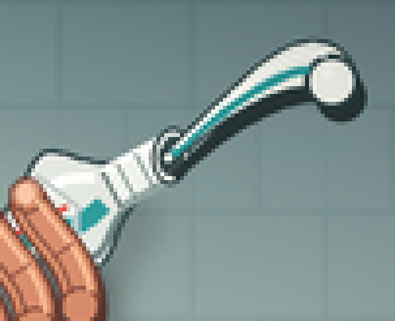
视觉工具实际返回图片 9
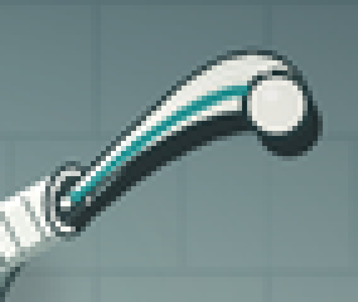
视觉工具实际返回图片 10
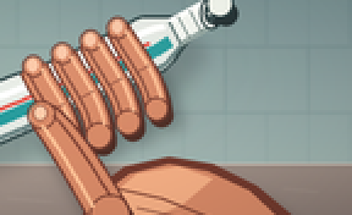
视觉工具实际返回图片 11
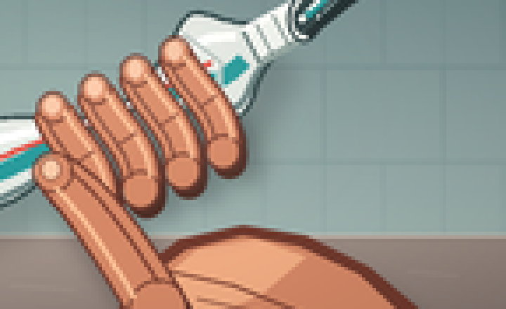
视觉工具实际返回图片 12
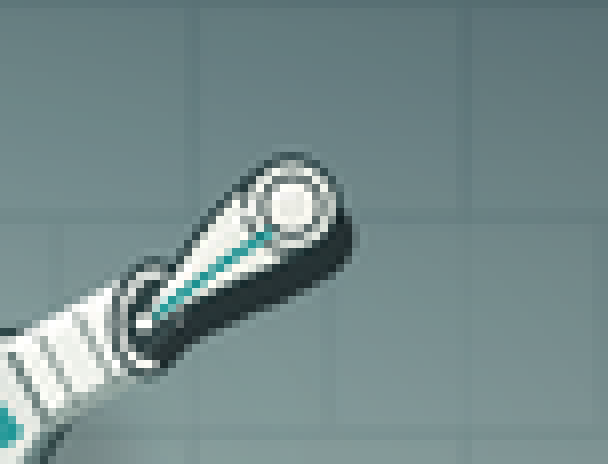
视觉工具实际返回图片 13

视觉工具实际返回图片 14
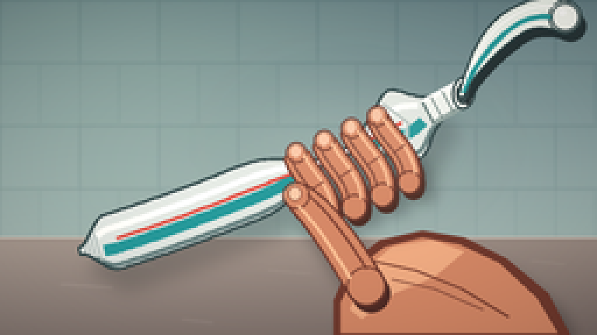
视觉工具实际返回图片 15
视觉工具实际返回图片 16
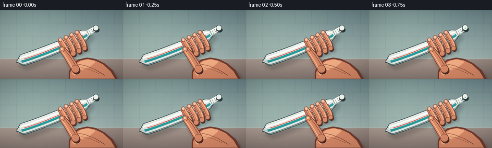
保存候选 5 份；完成命令 31 次；可验证图片返回 16 张。原始 API 响应与完整日志保留在本地。